NBA Home Court Advantage: Findings
Draft
We all assume home court matters. We’ve heard the stories: the hostile crowd, the friendly whistle, the team that’s almost unbeatable at home. It feels bigger in the playoffs than in the regular season. And maybe it isn’t what it used to be. Is that right?
So we dug in. Start with what you’re probably already wondering:
- Has home court really shrunk, and by how much?
- What is it made of, and why does it exist at all?
- If it changed, what changed it?
- And what do we think changed it, but didn’t?
The short answer to the first: home court advantage in the NBA has been shrinking for four decades.
A few things people assume:
- Did the rise in three-point shooting play a part? Yes, a big one.
- Was it better travel, or load management? Only a little.
- Was it smaller crowds? No: arenas are as full as ever.
The home team’s win rate has fallen from about 65% to 55% in the regular season, and from nearly 68% to 58% in the playoffs. Most of that is a slow, steady fade, with two stretches where it briefly sped up.
Home teams have always shot a little better, grabbed more rebounds, turned the ball over less, and gotten the friendlier whistle. Those four advantages account for about 95% of the home-court advantage, and all four have narrowed. Two real-world changes explain much of why. The shift to three-point shooting alone reaches close to half: it flattened the shooting advantage and ate into the foul and turnover gaps. Fairer officiating accounts for part of the foul gap. The rest stays unexplained, and that is the surprising part: the single largest driver of the decline, rebounding, is the one factor the data can measure but not explain, with part of the turnover gap unexplained alongside it.
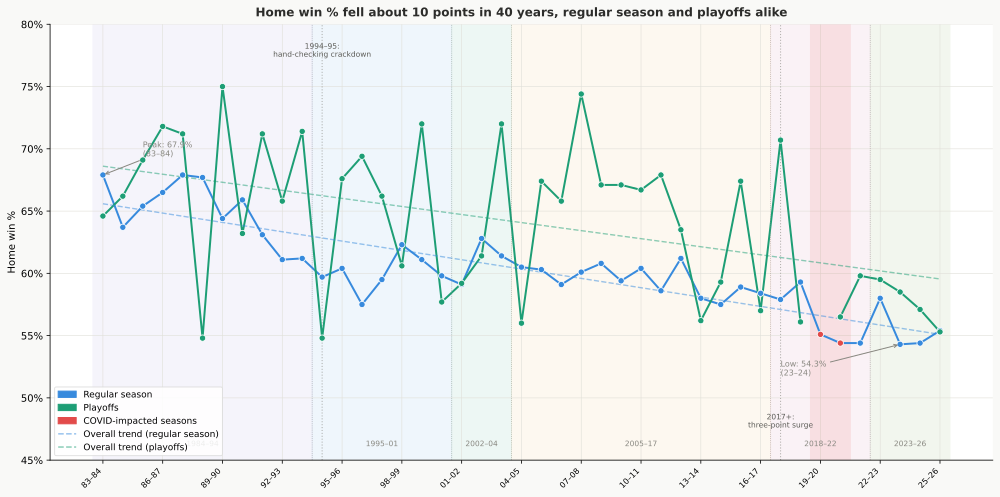
Why this matters. Teams play 82 games to earn the right to host in the playoffs, and that right used to be an important reward: in the 1980s and 1990s, a weaker team in the playoffs playing at home won 65% and 66% of those games; by the 1990s that rate matched or exceeded the stronger team’s home win rate. The building equalized the quality gap. Today the weaker team hosting wins about 49%, while the stronger team’s home rate fell only modestly on net, from around 70–75% at its peak to about 65%. Home court used to compensate for being outmatched. It no longer does.
What is not behind it is just as interesting: rule changes (with the single real exception of 1994–95), travel, time zones, pace of play, crowd size, and the playoff format changes, including the much-blamed 2014 switch. Two more matter only a little. Teams play fewer back-to-backs than they used to, so visitors arrive less tired, but that schedule change accounts for only about 8% of the decline. And competitive balance: in a year when the league’s teams bunch closer in quality, home court may dip a little, a year-to-year hint on a small sample rather than a firm finding, and parity has risen and fallen for 40 years while home court has fallen steadily, so it can’t explain the long decline. Each factor is tested; only 1994–95 registers a genuine effect, and it is accounted for above.
The regular season and the playoffs share a similar shape and pattern, but the playoffs lag behind the regular season in this decline. The regular-season figures rest on tens of thousands of games and are solid; the playoff figures rest on far fewer, so they show the direction of a change more than its precise size. The analysis covers about 52,000 regular-season and playoff games; see Appendix E for companion documents including the full statistical tables, and Appendix A for additional findings.
Prefer it in pieces? This report is also available as a series of shorter articles.
1. The 40-Year Decline
As mentioned, home court advantage has shrunk and the shape of the decline tells you more than the headline number does. The decline is mostly a steady fade of about a quarter of a point per year, which over 40 years accounts for nearly the whole decline. Two drops stand out where the slide briefly sped up within that trend. The first came in the mid-to-late 1990s, when the regular-season rate fell from about 65% to 60%. This is the firmer of the two: the 1994–95 hand-checking crackdown registers as a one-time drop of about 2.6 points (Section 4), with the rest of that stretch a continued slide as the adjustment played out through the late 1990s. A brief uptick around 2002–04 followed, visible but resting on only three seasons. The second drop came after 2017, and it is really the three-point shift showing up on the calendar: the share of shots from deep rose from about a quarter to about 40%, pushing the regular-season rate below 56%. Section 3 covers that mechanism; here it is enough to note when it landed. The playoffs held near 64% from the mid-1990s through 2017, then joined the slide, falling to 61%, then 58%.
Smaller advantage than it was does not mean gone. In the most recent regular season, nearly every team still won more at home than on the road, with only one exception (the lone red bar in the chart below). Good teams that win everywhere still win more at home; weak teams pick up most of their wins there.
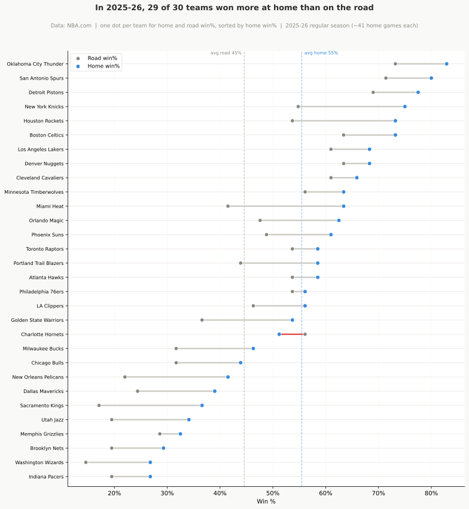
The drop is not concentrated in a handful of franchises: every team faded at roughly the same rate, which Section 4 examines.
Where is it heading? Carry the regular-season trend forward and it keeps sliding, from about 54.9% today to roughly 53.5% by 2031. That is a projection of the recent slope, not a prediction about future rule changes, so it comes with a wide range it could plausibly land in by then: about 48.4% to 58.6%. The playoffs point the same way, from about 58.8% to 57.1%, but on far fewer games the range is much wider, from about 44.9% to 69.3%. The takeaway is the direction, not the decimal: nothing in the recent data points back up. The low end of that range even dips below the level Section 6 argues is the likely floor, a reminder that this is a straight-line projection, not a forecast that knows where the decline runs out of room.
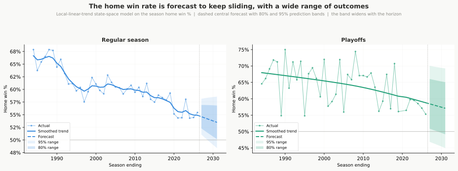
2. What Creates Home Court Advantage
So what is home court actually made of? Four things decide every possession: a shot falls or it doesn’t, the ball is turned over, a foul sends someone to the line, or a miss is rebounded. Those are the Four Factors, the framework Dean Oliver built (shooting as effective field goal percentage, rebounding, foul calls, and turnover margin), and home teams have historically come out ahead on all four. Together they account for about 95% of the home advantage in the regular season, and a similar share in the playoffs. Shooting is the largest piece, more than 40%, followed by rebounding. All four matter, and they count for about the same in both the regular season and the playoffs.
A caution on what this measures. The Four Factors are where the advantage shows up on the stat sheet, not why it exists. Behind each one sits a real-world cause: crowd comfort and familiar rims are the usual explanations for the shooting gap, referee tendencies sit behind the foul gap, rest and travel behind specific matchups. Some of those causes can be measured, and some can only be guessed at. So this section is firmer on where the advantage lands than on what ultimately produces it, and it says so wherever a cause is only a plausible explanation.
Rest and altitude add to the picture for specific matchups, covered later.
Referee foul calls and free throws. In every decade and in both regular season and playoffs, referees have called fewer fouls on home teams. In the 1980s and early 1990s, home teams averaged about 1.2 fewer foul calls per game in the regular season, translating to roughly 2 extra free throw attempts per game. In the playoffs the gap was even wider: about 1.6 fewer fouls per game and 2.4 more free throws. With fouls go free throws, and with free throws go points. This is the most consistent component of home court advantage.
How can an edge that small decide anything? Mostly, it can’t, not on any single night: the home free-throw edge in the 1980s swung anywhere from -12 to +16 attempts from one game to the next, a range many times wider than the roughly 2-attempt average sitting inside it. A night where the home team shoots 10 fewer free throws than the visitor is just an ordinary bounce, foul trouble, a cold shooting stretch, nothing to do with home court. The average only becomes visible once thousands of games are stacked together, and it has faded further than that night-to-night swing ever has (Appendix B).
The playoff referee data shows how universal this is: 45 of 47 officials with at least 50 playoff games on record show a home-favoring foul differential. Nearly every referee who has worked the postseason has called the game differently depending on which team was at home.
Shooting advantage. Home teams have consistently shot better than road teams: typically around a percentage point better in effective field goal percentage in most decades in both regular season and playoffs. The usual explanations are crowd comfort and familiar rims. My data can only confirm the gap is real, not pin down the cause.
Shot selection. Historically, home teams have gotten more of their attempts from close range and fewer from mid-range. A paint shot is more efficient than a mid-range jumper, so home teams have started each possession with a small built-in advantage in expected scoring. This advantage was clearest in an era when three-point attempts were rare. As three-point shooting took over, it gradually wore away this home advantage, in ways Section 3 covers.
Rebounding and turnover differential. Home teams have historically pulled down more rebounds and committed fewer turnovers: about one and a half extra boards and just under 0.4 of a turnover per game. Neither number is large, but both hand the home team extra possessions. Together they rival the shooting advantage in size. As Section 3 will show, this pair turns out to be the single largest driver of the decline.
The mix held, the size shrank. How much each factor counts toward winning has held nearly constant decade to decade. The game got fairer, not different in how its components combine. These shares describe what home court is made of today; Section 3 asks which of those pieces shrank, and the ranking flips: shooting is the largest piece of the advantage, but rebounding is the largest driver of its decline.
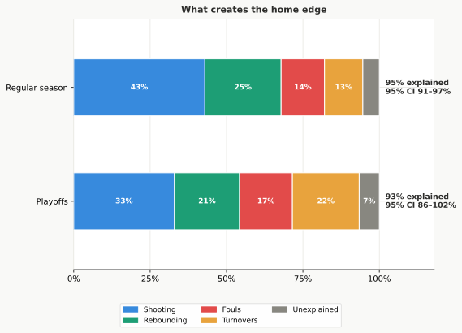
3. What’s Driving the Decline
“What’s driving the decline” is really two questions, and they don’t take the same kind of answer. One is where the decline shows up on the stat sheet. That one is clean: it’s the four box-score categories from Section 2, every one of them narrowing. The other is what changed in the real world to make those categories narrow. That is the question we actually care about, and the honest answer is that the data settles only part of it. Some causes are proven; others are the best explanation on offer but stay proposals. The table below is the map for this whole section: each box-score category, how much of the regular-season decline it carries, the real-world change behind it, and whether that change is proven or still a proposal.
| Box-score category | Share of the decline | What changed in the real world | Is that cause proven? |
|---|---|---|---|
| Rebounding (largest) | ~30% | Home teams stopped crashing the offensive glass harder than visitors | Proposed. The data shows the pullback happened; it can’t say why |
| Turnovers | ~27% | Half the move to three-point shooting; half better visiting-team preparation | Mixed. The three-point half is proven; the preparation half is a proposal |
| Shooting (eFG%) | ~21% | The move to three-point shooting | Proven |
| Fouls and free throws | ~18% | Half the move to three-point shooting; half fairer, more uniform officiating | Proven (both halves) |
Three-point shooting runs through three of the four rows, which is how it reaches close to half the decline even though its own category, shooting, is only about a fifth. The largest single piece, rebounding, is the one row not affected by three-point, and it is also the one the data can measure but not explain. The two proposed causes, the retreat from the offensive glass and better visiting-team preparation, may share a single root: as the tools for shot selection, scouting, and game prep reached all 30 teams at the same pace, the home team’s preparation advantage had less room to live. The section returns to that idea at its end. It is a plausible explanation, not a finding.
The Four Factors together account for roughly 96% of the regular-season decline, and that range is narrow: rebounding’s share lands between about a quarter and 38%, and the four categories together cover essentially all of the decline. In the playoffs the same four categories capture about 67%, but imprecisely: the figure could run anywhere from about 38% to all of it, and only the foul and rebounding trends stand clearly above the randomness. So the playoff breakdown points in the same direction as the regular-season finding rather than standing as an independent result. (These shares show where the decline registers in the box score, not a claim about ultimate causes.) The sections below trace how each piece works.
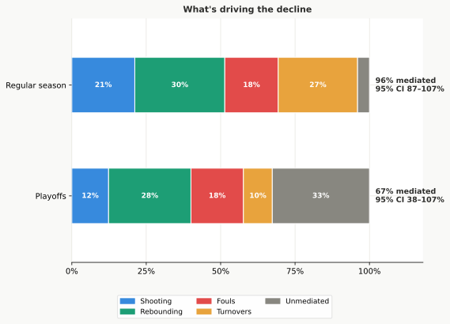

Three-point shooting: one shift across three of the four categories
Begin with the cause that runs through the most rows of the table: the move to the three-point line, which touches three of the four categories. It narrowed the shooting advantage and reshaped shot selection, in two visible ways. First, away teams have closed the gap in paint attempts: in the 1990s home teams generated about 1.3 percentage points more of their attempts from close range than road teams; in the most recent seasons that gap has shrunk to 0.2 points. Second, three-point volume itself rose for everyone. In games with similar three-point rates, the home shooting advantage shows no decline at all. The paint gap closing works the same way: it traces entirely to rising three-point volume, not to any separate cause. In the playoffs the paint gap narrowed in the late 2010s but has since rebounded toward its old level, making this a regular-season story for now.

The league’s three-point attempt rate and the home win rate have moved in opposite directions for 40 years. When fewer than 7% of shots were threes in the 1980s, home teams won 65%; when 40% are threes today, they win 55%. The timing even lines up with the second steepening, when the three-point share rose from about a quarter to 40% of all shots in the seasons after 2017.
It is tempting to read that chart as three-point shooting causing the decline, but the same 40 years changed almost everything else about the NBA too: training, scouting, salaries, the size and skill of the players. Anything that drifted steadily up over those decades will trace a near-mirror-image of anything that drifted steadily down, whether or not the two are related at all. So the 40-year chart, on its own, is weak evidence.
One way to check it: set aside the slow drift in both lines and look only at the year-to-year bumps, the seasons where threes rose more or less than their long trend. If threes were really pushing home court down, those bumps should line up too. They partly do, but the link is about 42% weaker than the raw mirror image looked: much of what made the chart so striking was just the two trends sliding past each other in step.
The clean evidence comes from a comparison the 40-year chart can’t make: games played in the same season. Within a single season nothing has had time to drift, so the rules, rosters, and style are the same for every game, and time can’t be the hidden cause. There, the high-three-point games are the ones home teams lose more often, about 2 to 3 fewer home wins per 100 games for every 10-point rise in three-point volume. Because those games are contemporaries, the pattern can’t be two long trends coinciding, and it holds inside every decade and in the playoffs too.
That win-level effect lands most directly in one box-score line: shooting. It accounts for roughly one-fifth of the regular-season decline. But the perimeter shift reaches past that one category: it also explains about half of the foul decline and about half of the turnover decline. Add those in and three-point shooting touches close to half the decline overall. What it does not explain is the largest single category, rebounding, which barely moves when games have similar three-point rates. The perimeter shift is a major force, then, but not the engine behind the whole decline. In the playoffs this pattern is less clear, since team quality tends to matter more than shooting style, but it still points the same direction.

Rebounding and turnovers: the largest drivers
Now the biggest row in the table, and the one the three-point boom doesn’t explain. The home team’s rebounding advantage has shrunk steadily for 40 years, and it is not the three-point story in disguise: in games with the same three-point volume, the rebounding advantage barely moves.
Both sides of the glass show declining home advantages. The home advantage on defensive rebounds fell from about +1.6 boards per game in the 1980s to roughly +0.6 today, a drop of about a full board. The home advantage on offensive rebounds fell from about +0.6 to slightly below zero. The defensive side fell more in absolute terms.
Part of that defensive-rebound drop, though, is arithmetic rather than home teams rebounding worse. As shooting accuracy rose across the league over the decades, fewer shots missed, so fewer defensive rebounds were there for anyone to collect. That shrinks the home team’s raw rebound count on its own, and the cause is better shooting, which the shooting category already counts. (This is shooting accuracy, a separate thing from the three-point volume ruled out just above.) The cleaner test is each team’s share of the offensive rebounds actually available. That share does not move just because shooting improved, so it shows whether home teams are still crashing the glass harder than visitors.
On that cleaner measure, the asymmetry is clear. In the mid-1980s, home teams converted about 34% of their offensive rebounding chances; away teams converted about 31%. Both rates fell as the league moved away from crashing the glass, but the home rate dropped 8 percentage points while the away rate dropped only 5. The two lines converge and cross by 2025–26. The advantage didn’t close because away teams became better offensive rebounders. Home teams stopped crashing the offensive glass more aggressively than visitors.
Why home teams retreated faster than visitors is not something this data can answer. The usual explanations are strategic (teams choosing transition defense over second chances, with three-pointers scattering long rebounds to less predictable spots) or about the crowd (a home building that once spurred extra glass-crashing had nothing left to amplify once the league-wide retreat took hold). These are plausible explanations, not conclusions this analysis can establish.
The home turnover advantage has shrunk too. Home teams once committed about 0.4 fewer turnovers per game than visitors across the full 40-year span; that gap has nearly closed. About half of the decline is a direct consequence of the perimeter shift: three-point attempts generate fewer live-ball turnovers than drives and post play, so as both teams moved out, the absolute number of turnovers fell league-wide and the home team’s advantage shrank with it. The other half is separate from three-point volume. Together, turnovers account for about 27% of the regular-season decline, nearly matching rebounding. In the playoffs the turnover trend is small and bounces around too much to be sure of, so the playoff evidence is consistent with the regular-season story rather than established on its own.
What drove that other half is a question this data can’t settle either. Improved scouting and video preparation are the most plausible contributors: visiting teams are better prepared for unfamiliar defensive schemes than they once were. But that is a hypothesis, not a finding.
The playoffs point the same way on rebounding: the home rebound-share advantage has fallen by roughly three-quarters there too, though on a fifteenth as many games it is too thin to stand on its own.

Player-tracking cameras, in use since 2013–14, give a direct read on the same offensive-glass retreat, including the box-outs a box score never recorded: the home advantage in converting offensive-rebound chances kept shrinking across the tracking era, from about 1.2 to 1.3 percentage points in the mid-2010s to under 0.2 today, while home teams held no measurable box-out advantage and the second-chance-points advantage barely changed. By the time the cameras arrived, most of the 40-year decline had already happened, so this corroborates the modern mechanism rather than the long decline.
Officiating got fairer and more uniform
That leaves the foul row, where two different causes split the work. The home foul differential in the regular season has dropped from 1.2 fouls per game in the 1980s to roughly a quarter of a foul per game today, an 80% reduction. In free throw terms: home teams once attempted roughly 2 more free throws per game than visitors; now it’s just under half a free throw. In the playoffs the foul gap fell from 1.6 to about 0.7 fouls per game, and the free throw advantage from 2.4 to 1.1 attempts. The home foul advantage has fallen about 80% in the regular season and more than half in the playoffs.
The playoff referee chart shows the generational shift clearly. Newer referees are not only less biased on average; they are also more uniform in their calling. Per-official records are available from 1995 onward; the 1980s-early 1990s baseline figures above come from the overall foul gap visible in the differentials chart earlier in this section.
Three-point shooting played a direct role too. Three-point attempts draw fewer fouls than drives to the basket. As both teams moved toward the perimeter, there were simply fewer foul calls to go around, and the home team’s absolute gap shrank with it. About half of the foul decline traces to this mechanical shift in shot selection; the other half reflects genuine change in how referees call the game.
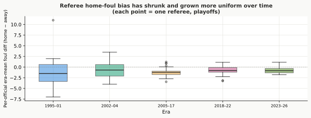
What the three-point shift explains, and what it doesn’t
Step back to all four rows at once. A suspicion has been building through this section: that the move to threes is secretly behind everything. Could rebounding and turnovers just be the three-point shift in disguise? No. When games with similar three-point rates are compared directly, the shooting decline disappears entirely: the shooting gap closed because of the perimeter shift, not any separate cause. The rebounding decline barely moves and stays the surest of the four. Fouls and turnovers each land in between: roughly half of each category’s trend is explained by rising three-point volume, leaving the other half separate from the perimeter shift. The categories doing the most work to drag home court down, rebounding and the part of turnovers separate from threes, are doing it for reasons the three-point boom does not explain. (In the playoffs the same comparison is too thin on games to read clearly; only the rebounding decline clears the bar. So this is a regular-season verdict.)

One plausible explanation is that analytical tools for shot selection, scouting, and preparation have reached every team at roughly the same pace. When all 30 teams land on the same approaches regardless of venue, the home team’s preparation advantage has nowhere to go but down.
4. What Didn’t Drive the Change
On to the fourth question: what do we think changed home court, but didn’t? Plenty of prime suspects, and most of them have an alibi. The opening chart shades seasons by the NBA’s major rule changes. A natural assumption is that those boundaries explain where home court bent. Here are the eras and what defines them:
| Era | Seasons | Defining rule change |
|---|---|---|
| 1984–94 | 1983–84 → 1993–94 | Illegal-defense rules (no zone defense) |
| 1995–01 | 1994–95 → 2000–01 | Hand-checking restrictions; zone still illegal |
| 2002–04 | 2001–02 → 2003–04 | Zone defense legalized; defensive three-seconds added |
| 2005–17 | 2004–05 → 2016–17 | Perimeter hand-checking banned (the pace-and-space era) |
| 2018–22 | 2017–18 → 2021–22 | Freedom-of-movement emphasis |
| 2023–26 | 2022–23 → 2025–26 | Transition take-foul rule |
They mostly don’t. Only 1994–95 registers a real shift in the data: a genuine one-time drop of about 2.6 points, most likely from the hand-checking crackdown (though the simultaneously shortened three-point line adds some ambiguity). Hand-checking registered because it directly affected referee discretion, one of the few things that can shift asymmetrically between home and away teams. Every other rule change reshaped how the game looks without reshaping who benefits from playing at home: zone legalization, the 2004-05 perimeter hand-check ban, freedom of movement, and the take-foul rule. In the playoffs, even 1994–95 doesn’t register; the postseason slide is steady drift throughout.
Most off-court explanations either don’t matter or haven’t changed enough to explain the decline. Travel distance has a negligible effect in the regular season (about 0.07 points per 100 miles, and if anything slightly against the home team) and none measurable in the playoffs. Time zones are flat in both. Rest makes a difference on any given night (home teams win 63% when better-rested, 58% when the visitor has the advantage), but that gap hasn’t changed across eras. Load management cut back-to-back frequency from 35% to under 20%, which is real, but that schedule change accounts for only 8% of the decline; home advantage shrank within every rest situation alike. Pace of play shows no meaningful relationship to the trend. The home-vs-away gap in three-point attempts has only grown: home teams now take slightly more than visitors, the wrong direction to explain a shrinking home advantage. Competitive balance shows none in the raw season-to-season comparison; a faint link appears only in the year-to-year wobble, not the 40-year trend, and only on a small sample, so it is best treated as a hint, not a finding.
Crowds have stayed near capacity throughout, even in the very years home court hit its lowest, so crowd size is not the dial. Crowd presence is different. The 2020-21 pandemic seasons ran an accidental test: with buildings empty, home teams won just 51%; with any crowd at all, about 58%. A crowd is a genuine ingredient of home court, worth about seven points on the night. But it is a switch that flips with the doors, not a 40-year dial slowly turning down. A test combining all these off-court explanations at once confirms it: rest, altitude, time zones, and COVID seasons each have effects, but none of them explain the long-run decline. What’s left belongs entirely to which era the game was played in: the decline itself, not any off-court factor. The full treatment of each hypothesis, including why each seemed plausible and exactly what the data showed, is in Part 2 of The Investigation.

The decline isn’t concentrated in a handful of franchises. Each active franchise was tracked separately. Remove the random bounce of a 40-odd-game home schedule, and the spread across teams is no bigger than that randomness: the real team-to-team difference in decline rates is about zero. Every franchise’s home-court advantage faded at roughly the same league-wide rate, about half a point of the home-road gap per year. No single team stands apart as the cause. This is a regular-season result; per-team playoff samples are too small to split this way.
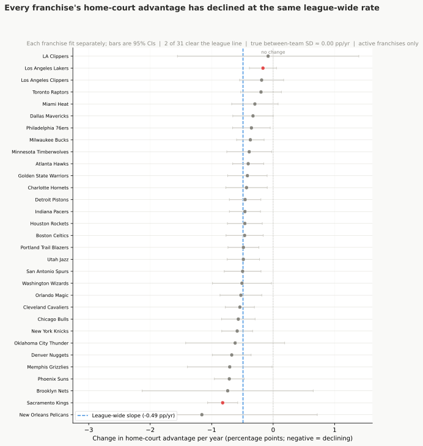
5. The Playoff Picture
Everything so far has leaned on the regular season, where the games run into the tens of thousands. But home court is supposed to matter most in the playoffs, so what happens there? The playoffs are not a shrunken version of the regular season. They have their own structure, their own baseline, and their own timeline of decline.
Averaged across the four decades, the arena a playoff game is played in has mattered more to the outcome than the quality gap between the two teams (among the factors this analysis measured). The home team usually wins Games 1 and 2 at the higher seed’s arena, and Game 5, back at the top seed, is the most lopsided game of the series (the chart below traces the full Game 1 through Game 7 pattern). Games 3 and 4, at the lower seed’s arena, average about 55% for the home team across all decades, but that average hides a large change the next paragraph unpacks: the venue advantage that once overwhelmed quality has nearly flattened. Even Game 7 still goes to the home team about 64% of the time. Road teams show no evidence of adapting as a series deepens.
In the 1980s and 1990s, the lower-seeded team (the weaker opponent) won 65% and 66% of their home playoff games. The gap was small, under 6 points in the 1980s, and in the 1990s the lower seed won more often at home than the higher seed did. Quality barely mattered once you were in your own building. The question was not whether you would win at home; it was whether you could steal one on the road. From the mid-2000s onward the lower seed’s rate dropped to 47–52%, while the higher seed’s held near 70–75% through 2022 before falling to about 65% in recent seasons. A gap that started at about 5–6 percentage points grew to more than 20 at its peak and still sits near 15 today. The decline is not mainly about better teams winning more at home. It is about worse teams winning less.
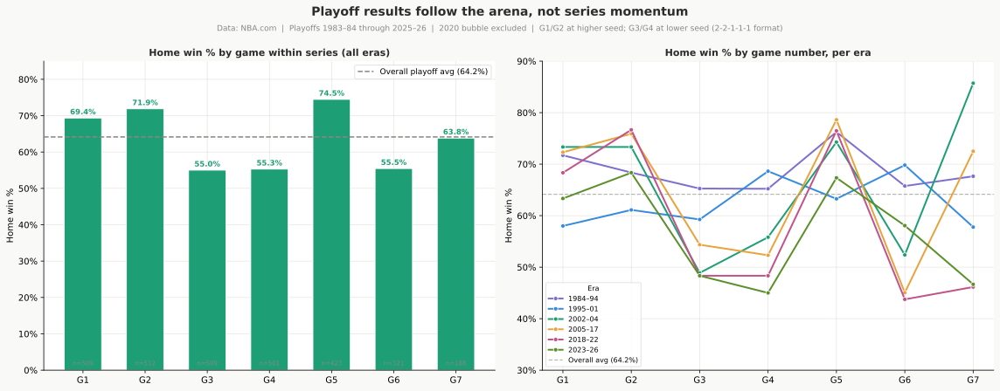
The playoff decline is real home-court weakening, not weaker seeds. A natural objection: maybe playoff home teams win less now simply because top seeds no longer outclass their opponents the way they once did. The data says no. Even with the quality gap between the two teams taken into account, the year-by-year playoff decline doesn’t budge. None of it is explained by seeds bunching together. The cleanest proof: when the objectively weaker team hosts Games 3 and 4, it still wins just over half the time (the 55% above is by seed; this isolates the genuinely weaker team by regular-season quality). Home court alone is still worth a coin-flip-beating advantage, and that advantage is what has been slipping away.
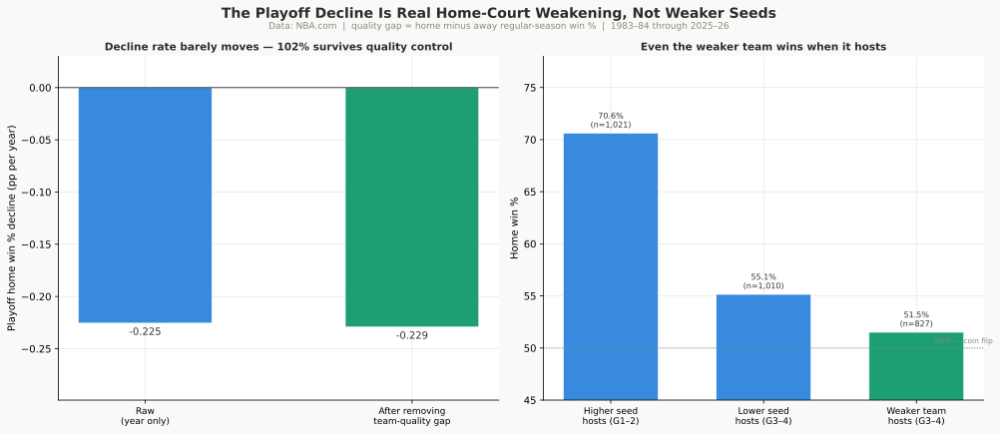
The 2014 format change didn’t cause the playoff drop. The playoffs have been restructured over the years, in four distinct format periods:
| Period | Seasons | Format |
|---|---|---|
| 1984 | 1983–84 | Best-of-5 first round; 2-2-1-1-1 Finals |
| 1985–02 | 1984–85 → 2001–02 | Best-of-5 first round; 2-3-2 Finals |
| 2003–13 | 2002–03 → 2012–13 | Best-of-7 first round; 2-3-2 Finals |
| 2014–26 | 2013–14 → 2025–26 | Best-of-7 first round; 2-2-1-1-1 Finals |
The most recent shift, in 2014, coincided with the sharpest period of playoff HCA decline: a nearly 7-point raw drop from the 2003–13 period to the 2014–26 period. But the playoff slide was already underway before 2014 and continued at the same pace after; the format change added nothing of its own. The playoff drop would have arrived on roughly the same schedule regardless. Format was not the cause.
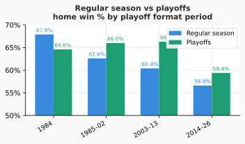
A best-of-7 absorbs most of home court, and most of its decline. A single home game and a seven-game series are very different things. To see how the per-game advantage translates into who wins a series, I ran a simulation: take the home win rate for a single game and play out 200,000 best-of-7 series between two otherwise-equal teams, with the home-court team hosting Games 1, 2, 5, 6, and 7. The format flattens the advantage. In the 1980s a home team won about 65% of individual regular-season games, but that turned into only a 55% chance of winning a series. By the 2020s the per-game rate had fallen to about 55%, and the series advantage with it, to about 52%: a home-court team in a series is now barely better than a coin flip. The playoffs tell the same story at a slightly higher level, a series advantage near 53% today. The drop matters less than the per-game numbers suggest: a roughly 9-point fall in the regular-season per-game advantage shows up as only about a 3-point fall at the series level.
Two cautions on the simulation. The playoff per-game rate mixes home court with seeding (better teams host more games), so the regular-season figures are the cleaner read on the pure venue effect. And the simulation treats each game as a fresh start, unaffected by who won the ones before, so it shows how much the format dilutes an advantage rather than forecasting any real series.
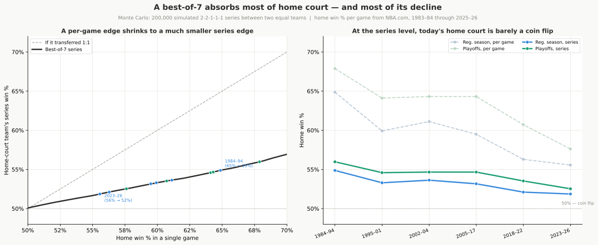
Additional findings, including individual referee rankings, franchise-level comparisons, and the blowout-margin trend, are in Appendix A.
6. Summary
Back to the four questions we opened with. Home court advantage in the NBA has dropped about 10 percentage points over 40 years: the regular season from 65% to about 55%, the playoffs from nearly 68% to 58%. By net rating (how much the home team outscores its opponent per 100 possessions), the regular-season advantage has shrunk by about a third, from about 3 points in the mid-2010s to about 2 today; the playoffs compressed more slowly and still sit higher.
The advantage runs through four box-score categories, and the same four are what narrowed. Shooting (effective field goal percentage) is the largest piece, more than 40%; rebounding adds about 25%, with foul calls and turnover margin making up most of the rest. Together they capture about 95% of the home advantage and about 96% of its decline.
Most of the fall is a slow fade of about a quarter of a point per year. Two stretches sped up briefly, but they are accelerations within that trend, not extra drops on top of it: the firmer one is the mid-to-late 1990s, traced to the 1994–95 rule change (most likely the hand-checking crackdown), and the later one is the three-point shift arriving on the calendar after 2017. Rebounding is the largest single category in the decline, though three-point shooting, counted across every category it touches, reaches close to half overall.
Four findings carry the decline:
- Officiating got fairer. The home foul benefit, largest in the 1980s, has mostly closed: about an 80% reduction in the regular season and more than half in the playoffs. Half traces to the three-point shift (arc shots draw fewer fouls than drives), the other half to genuine change in how referees call the game: 45 of 47 playoff officials with at least 50 games still call fewer fouls on the home team.
- Three-point shooting reaches beyond the shooting line. As volume rose, away teams closed the close-range shot-quality gap home teams once carried into every possession, and high-three-point games go against home teams even within a single season, not just across decades. It registers most directly as shooting (about a fifth of the decline) but, counting its share of the foul and turnover categories, reaches close to half.
- Rebounding is the largest single driver, separate from the three-point shift. Home teams’ share of available offensive boards fell about 8 percentage points while away teams’ fell only about 5; the advantage closed because home teams stopped crashing the glass harder, not because visitors improved.
- The turnover gap closed, about 27% of the decline. About half traces to the perimeter shift (arc attempts generate fewer live-ball turnovers than drives); the other half is separate from it.
What drove the rebounding and turnover changes is not something this analysis can establish. Transition defense, better visiting-team preparation, and the perimeter revolution are all plausible contributors, but they are hypotheses, not conclusions from this data.
What did not drive the decline: rule changes (except 1994–95), travel, time zones, pace of play, crowd size, and playoff format. Fewer back-to-backs for visiting teams explains only about 8%. Competitive balance can’t explain the long fall either (parity bounces up and down while home court has fallen steadily for 40 years), though year to year the two wobble together a little. Arenas have stayed near capacity even as the advantage shrank. The one genuine crowd effect is a switch, not a dial: in the empty arenas of 2020–21 home teams won just 51%, then snapped back to about 58% whenever fans returned.
The playoffs have followed the same path with nearly a two-decade lag, on far fewer games, so the direction is certain but the size is not. Postseason home court held firm through the 2000s and 2010s even as the regular season slipped, then joined the slide after 2018. The internal structure is unchanged: the home team wins about 70% of the early games at the top seed’s arena, Game 5 is the most lopsided, and even Game 7 still goes home about 64% of the time. In the 1980s and 1990s the lower seed won about 65–66% of its home playoff games, sometimes more than the higher seed did; today it wins about 49%. Home court used to compensate for being the weaker team. It no longer does.
Where the trend goes from here. Three-point volume (now about 40% of shots) and the retreat from the offensive glass (down from 33% to 26%) are both near the limits of their effect, so the pace of decline should slow. The empty-arena data marks the likely floor: with no crowd, no foul bias, and no preparation advantage, home teams still won 51%, and something near that is probably where the trend settles. One plausible reason it fell at all: analytical tools for shot selection, scouting, and preparation reached all 30 teams at roughly the same pace, leaving the home team’s old preparation advantage nowhere to go. That is not specific to basketball; every major sport investing in the same analytics is probably on the same path, though the data here can’t test it.
Appendix A: Additional Findings
Three threads turned up that don’t bear on the four questions: how much referees really differ once short samples are accounted for, why a couple of buildings still rank highest even as every franchise’s advantage faded, and why blowouts keep getting bigger even as home teams win less of them.
Referees differ, but by less than the leaderboard suggests
Of 47 officials with at least 50 playoff games, 45 call fewer fouls on the home team. The most home-leaning on record, Ron Garretson (last worked a playoff game in 2017-18), Joe Crawford (2014-15), and Eddie Rush (2011-12), sit roughly a full foul per game apart from the most even-handed, a group that includes Tony Brothers, Josh Tiven, and Joe Forte. About 60% of that raw spread is the random bounce of how few games some officials worked. Referees genuinely differ, but the gap between them is narrower than the leaderboard suggests, and this measures tendencies, not proof that any one official decides games.
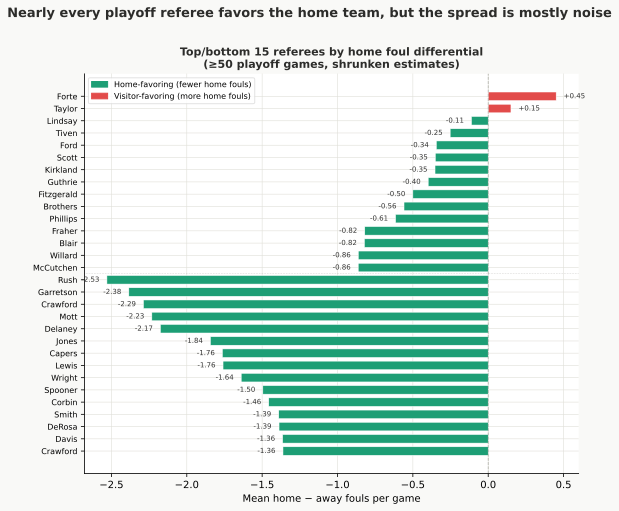
What separates one franchise from another
Start with which buildings are hardest to win in. Denver and Utah have the largest home-court advantages in the league, likely because of altitude. Across 40 seasons, the Nuggets and Jazz hold the largest regular-season home advantages of any franchise: about 28 and 27 percentage points above their own road win rates, against a league average near 20. Both play at altitude. The franchise spread is real: roughly 70% of the variation across teams reflects genuine differences, not noise. Altitude sits right at the top of it. With only two high-altitude franchises, elevation can’t be fully separated from whatever else is unique to those teams, but it is the most plausible common thread. (The 28-point figure is their full home-minus-road gap; the altitude piece on its own accounts for about 8 of those points.)
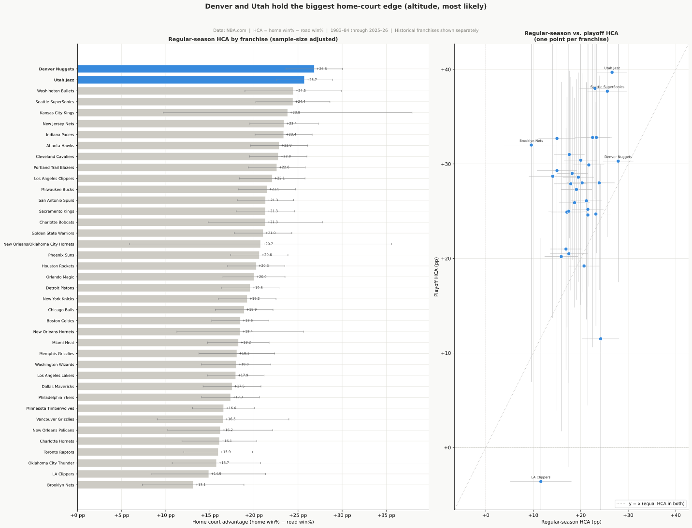
Those are the levels franchises sit at today; the next question is how much each one’s advantage fell over the 40 years. The decline is universal, but the raw two-era drops vary widely. These raw differences are inflated by the random bounce of small samples and compression from a high starting point; once those are removed (§4), the true team-to-team difference in decline rate is near zero. Splitting the 40-year record at 2001–02, the league average dropped from about 25.6 percentage points to about 17. Every one of the 26 franchises with at least 400 home games in both halves declined. Sacramento and Phoenix fell the most, about 16 and 15 points; both had been near the top of the league in the 1980s and 1990s and are now near the bottom. The Knicks shed 13 points. At the other end, the Los Angeles Lakers barely moved at all (a drop of under 1 point), though they started below the league average and remained there. Denver and Utah both declined substantially (13 and 9 points respectively) but still sit at the top of the late-era rankings. The pattern is consistent with compression: franchises that had the most home-court advantage in the early era had more room to lose.
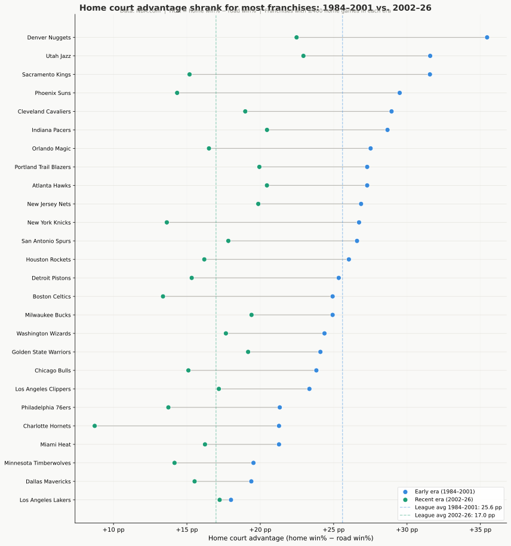
All of that is the regular season. Does the same patterns hold in the playoffs? In the playoffs, every franchise’s home court looks the same. That real regular-season spread vanishes in the postseason. With fewer than 150 playoff home games on record for most franchises, the apparent gaps just reflect how few games each has played. The real spread between franchises is too small to separate from the random bounce of those few games. A team’s apparent postseason home-court strength mostly reflects being a good team. Good teams simply play more home games.
The typical home advantage is larger in the playoffs than in the regular season. This is about the average size of the advantage, not the spread between teams just discussed: franchises look alike in the playoffs, but the common advantage they all share is bigger. Averaged across franchises with both records, home court is worth about 20 points in the regular season and about 27 in the playoffs, a 7-point premium. Teams that protect their building in the regular season tend to do so in the playoffs as well, but only loosely. The crowd, the stakes, and the familiar floor seem to count for more in the playoffs.
Blowouts are getting bigger, even as home teams win less
As home court advantage has declined, the margin when the home team does win has grown. Home wins are more lopsided; home losses are more lopsided too. Track the full spread of margins regardless of who won: the gap between the biggest wins and biggest losses widens by about 0.2 points per year in the regular season and 0.3 in the playoffs. In the regular season blowouts grow in both directions; in the playoffs the spread widens mainly because the big home wins keep getting bigger. Fewer home wins overall, but the ones that happen are more decisive.
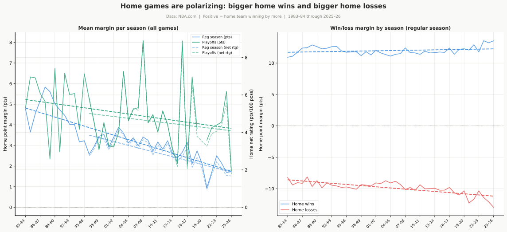
Appendix B: How Can 2 Extra Free Throws Shift Home Court Advantage?
Section 2 put a number on the whistle’s bias: in the 1980s, home teams averaged roughly 2 more free throw attempts a game than the visitor, worth a bit over a point of scoring. That is a small number to carry real weight in who wins about 52,000 games. The answer sits in the gap between what one game looks like and what a whole season of games looks like.
On any single night, the average edge is buried in noise. Free throw attempts swing wildly from game to game (foul trouble, a hack-a-shaq stretch, a night both teams live at the line), so the average lean toward the home team is nowhere near the biggest thing driving the count in any one game. In the 1980s, the middle 80% of regular-season games saw the home team attempt anywhere from -12 to +16 more free throws than the visitor, a range many times the width of the +1.97-attempt average sitting inside it. A game where the home team shot 10 fewer free throws than the visitor, well inside that ordinary range, says nothing about which team the referees favored that night.
| 1984–94 average | 1984–94 typical range* | 2023–26 average | 2023–26 typical range* | |
|---|---|---|---|---|
| Regular season | +1.97 | -12 to +16 | +0.46 | -11 to +12 |
| Playoffs | +2.35 | -11 to +16 | +1.09 | -10 to +11 |
Typical range: excludes the most extreme 10% of games on each end, so it covers the middle 80% of nights.
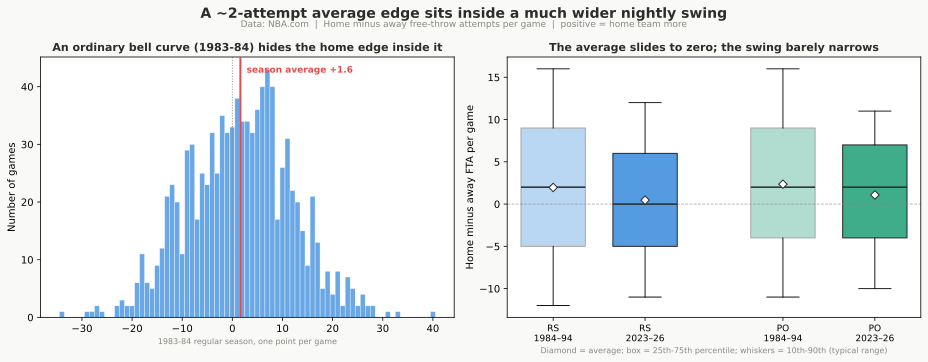
The average shrank far faster than the swing around it. In the regular season, the average free-throw edge fell 77% while the typical night-to-night range narrowed by only 18%. The share of games where the home team attempted more free throws than the visitor fell from 56% to 49%, close to a coin flip. The playoffs show the same shape but move less: the average fell 54%, and the home-favored share only slipped from 57% to 56%, another sign the playoffs lag the regular season’s decline (Section 5).
The foul count behind those free throws tells the identical story.
| 1984–94 average | 1984–94 typical range* | 2023–26 average | 2023–26 typical range* | |
|---|---|---|---|---|
| Regular season | -1.23 | -8 to +6 | -0.25 | -6 to +6 |
| Playoffs | -1.58 | -8 to +5 | -0.68 | -6 to +5 |
The regular-season foul gap fell 80% while its night-to-night range narrowed only 14%; the playoff foul gap fell 57%, again a smaller drop than the regular season.
What this means for the rest of the report. None of this changes any finding elsewhere: it explains why a real, repeatable bias can be invisible in any single game and only show up once thousands of games are averaged together. The free-throw edge belongs in the same category as the shooting, rebounding, and turnover edges covered above: modest on its own, indistinguishable from noise on any given night, but consistent enough across tens of thousands of games that its shrinking became a measurable slice of the 40-year decline.
Appendix C: How We Know This Isn’t Made Up
Most claims in this report are the kind that are easy to get wrong by accident, or to talk yourself into: pick the right years, fit a model to a story you already believe, and run enough tests and something will always look real. So the findings were put through a battery of checks built to make them fail. They held. Here is what was tried, in plain terms. The Investigation companion (Appendix E) lays out each test with its full numbers.
The slowdown was dated several different ways, and they agreed. The decline bent once, gently, in the late 1990s, then kept drifting. A bend like that can be an illusion of where you draw the line, so it was located with methods that share no assumptions: one that checks every possible break year for the sharpest change, one that watches the trend for drift as the seasons pile up, and one that weighs whether the record is better described by no bend, one bend, or two. They all land on about 1999, inside a range of roughly 1992 to 2003. When independent methods agree, the bend is in the data, not in the choice of line.
The result was tested carefully on purpose. A favorite way to fool yourself is to find an “effect” at a moment when nothing actually happened. So fake rule changes were planted at dozens of years where nothing changed, to see whether the method would invent an effect anyway. It didn’t: the only year that stands out as a genuine one-time shift is the real 1994-95 hand-checking crackdown, a drop of about 2.6 points. The decline is not an artifact of where the breaks were placed.
The explanation was frozen on old seasons and made to predict the rest. A fair worry about any after-the-fact story is that it was fit to the whole history, so of course it lines up. To test that, the four-category box-score model was trained only on seasons through 2013, then used unchanged to predict each later season’s home win rate. Its error on seasons it had never seen is about 1 percentage point in the regular season, against more than 5 for a flat guess, and it even catches the 2021 dip a simple trend line misses. The same frozen model reconstructs the steeper modern playoff decline too. The mechanism predicts data it was not built from.
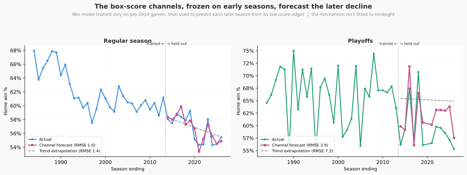
The breakdown was re-run with no straight-line assumption. The split of the decline across the four categories comes from a model that adds them up in a straight line. A second, more flexible model that lets the categories bend and feed off each other agrees closely on three of the four channels: fouls the smallest at about 14% (the straight-line table put it a little higher, near 18%), with turnovers and rebounding close behind, adding back to the same total drop. Shooting is the exception: the flexible model puts it as the single largest channel at 35%, above the straight-line table’s 21% and outside the range that table itself said the value could shift within (11–28%). Shooting, fouls, and turnovers all move together with the three-point shift, so when two methods divide credit among channels that trend together, they can split it differently even while agreeing on the total; that’s what’s happening here, not a contradiction about whether shooting matters. In the playoffs, with a fifteenth as many games, the straight-line table’s own range is already too wide to say whether the same split holds. Because the two methods share no assumptions, agreeing on fouls, turnovers, and rebounding means those three shares are a feature of the games themselves, not of the simpler model; shooting’s share is the one number here to treat as approximate rather than settled.
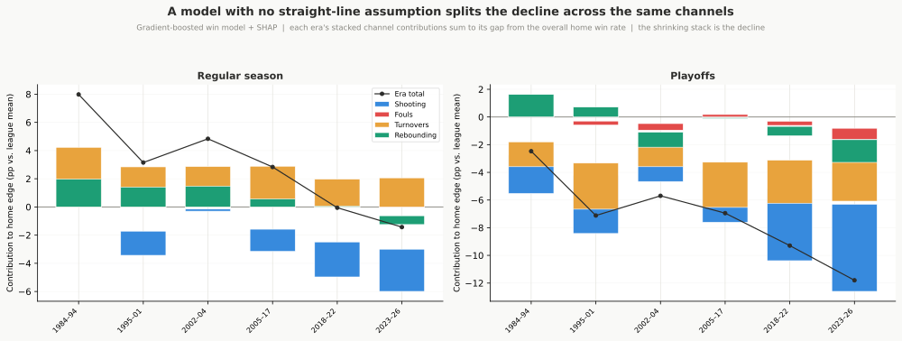
The drivers were tested against a hidden cause. Maybe a category is just standing in for something the box score never recorded. There is a standard way to ask how strong such a hidden cause would have to be to explain a link away: it would have to be tied to both the category and winning. For the shooting link, a hidden cause would have to explain more than 60.5% of everything left unexplained in both the shooting gap and who wins; for the foul link, more than 28.9%. Those are demanding thresholds, so the strongest links are hard to wish away. This measures how hard the links are to explain away; it does not prove the categories cause home wins.
Running many tests was corrected for. Test enough things and a few will look real by chance alone. After the standard correction for having run a whole battery of tests at once, the central results, the decline and its main drivers, still clear the bar. They are not the lucky few.
It wasn’t just which teams happened to host. The era decline could be a trick of composition, if the stronger home teams happened to host more in the early years. When each franchise is checked on its own, the era-by-era decline barely moves. It is not an artifact of which teams played at home in which decade.
For every test above with its full numbers and the range each result could shift within on the games available, see the Investigation companion (Appendix E); the raw statistical output is in the Results file.
Appendix D: Independent Corroboration
Sparkle Technologies published an independent analysis of the same question at sparkletechnologies.com/blog/nba-disappearing-home-court-advantage. I checked every number we share in common. Most of them match. The disagreements are instructive.
Where we agree. The overall decline, the foul-call story, the irrelevance of travel and pace: all consistent across two independent pipelines. One sign both pipelines are measuring the same thing: Sparkle’s home-court figures for the two altitude teams, Denver and Utah, land within a tenth of a point of mine.
Where we differ, and why. The blog names the three-point revolution as the primary cause, drawing on a 40-year near-mirror image: as three-point attempts rose, home win percentage fell. I ran a tighter test and found about 42% of that lockstep is just two trends drifting the same way over time, not one causing the other. The three-point effect is real, showing up within individual seasons too. Counting its share of the foul and turnover categories (about half of each), it reaches close to half the decline, still short of the whole story. The category the blog never measures at all, rebounding, is the single largest category and is untouched by the perimeter shift; the fading turnover advantage adds more on top. Part of the gap is just a question of how you count: the three-point shift is the most far-reaching real-world cause (it touches three of the four box-score categories), but no single category it drives is as large as rebounding, which has its own separate cause.
On the mid-1990s drop, the blog attributes it to the shortened three-point line (1994–97); I attribute it to the hand-checking crackdown. Both changes happened in the same seasons, and both pipelines even land on the same 2.6-point drop. We just disagree on the cause. Breaking the decline by category gives some traction: foul calls shifted immediately and by a clear margin at the 1994-95 boundary while the shooting category barely moved, pointing more toward hand-checking. The two are not fully separable, but hand-checking is the more consistent explanation with the data.
The empty-arena numbers look different for a methodological reason. The blog’s “empty arena” figure (54.4%) is the 2020–21 season average, blending games with zero fans and games with partial crowds. I split those apart: 51.0% with empty buildings, 58.5% with any crowd at all. No real disagreement on the conclusion (crowd presence is a switch, not a dial), but the blog’s single number averaged over the whole phenomenon.
What the blog found that I then tested. The blog credited the schedule shift, fewer visitors arriving on a back-to-back, with 15–20% of the decline. The premise checks out: back-to-back frequency fell from about 35% to under 20%. The magnitude doesn’t hold. Separating the schedule change from the rest puts the schedule effect at roughly 8% of the decline. The other 92% is the home advantage shrinking within every rest situation alike, regardless of how tired the visitor is.
What I found the blog missed. The rebounding decline is the biggest thing the blog leaves out. The blog’s box-score account has no rebounding term; I find it is the largest driver, separate from the three-point shift, carrying 30% of the regular-season decline, and it holds up when games have similar three-point rates. The fading turnover advantage (another 27%) is also unaccounted for. The blog’s breakdown points at something real. It just misses where most of the work is happening.
Appendix E: Companion Documents
| Document | Description |
|---|---|
| Regression Results | Full statistical output from the analysis pipeline: regression tables, significance tests, and coefficient values for every analysis in this report. |
| The Investigation | The tests behind the findings, in plain language: Part 1 walks the confirmed drivers (the decline, the four channels, fouls, three-pointers, rebounding, turnovers); Part 2 covers every ruled-out hypothesis. Reports p-values and confidence intervals. |
| One-Page Summary | Standalone summary built around the four questions, the decline chart, and a Four-Factors table. |
| Article Series | This report recut as eight standalone articles, each a shorter read on one part of the story. |
| Stats Explainer | Guide to the statistical methods used, written for a general audience. |
| Stats Tutorial | Worked examples reproducing key results from the regression output. |
Appendix F: Was this written by AI?
Mostly yes, but hopefully that isn’t a bad thing. I’m trying to build a toolkit to ask interesting NBA questions, do analysis, make graphs, and create understanding. I want to do more of these than I can write, so I’m having Claude write most of the text. I have gone back-and-forth with claude for many dozens of hours, making it make things clear so that I understand. Claude is not doing any of the calculation, that is Python using standard Python methodologies. Interpreting those results are Claude, but I make it make me understand, and I hope that’s good enough. I’m still uncertain about using LLMs to write text, but it’s so much faster than me. I think the results are good as long as I do a lot of work making it clearer.
This is kind of interesting, because I can kind of treat the text as output from a program. I can ask if we can make things clearer, or add more curiosity throughout the document. From that I get text changes. So I can operate at a higher abstraction. Of course, that doesn’t mean it sounds human or like you want to read it. But I think if you read this you will get my intention.
I tried out AI slop detectors to see how bad it is. One said that every paragraph I tried was 99.9 - 100% AI. even the above paragraph that I, a human, definitely wrote.